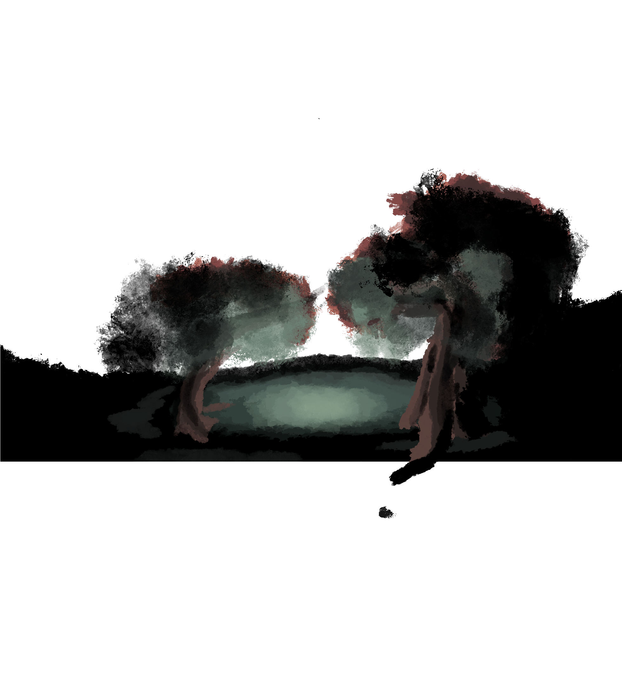
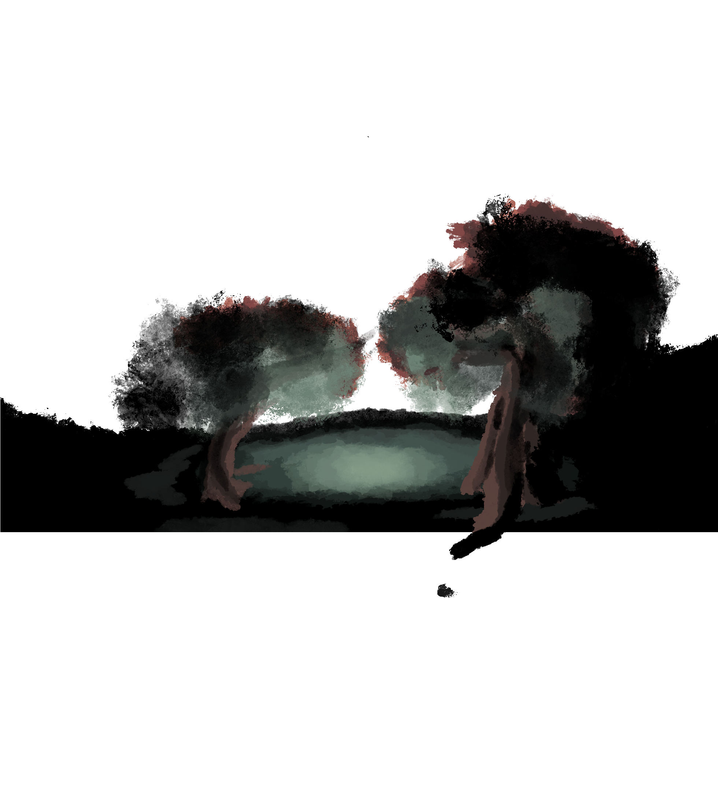
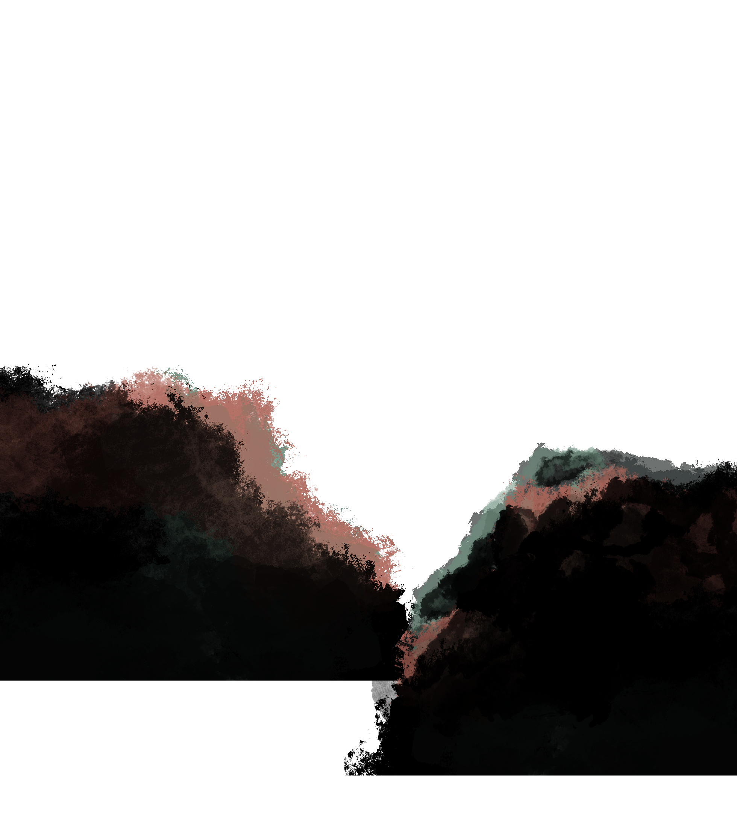
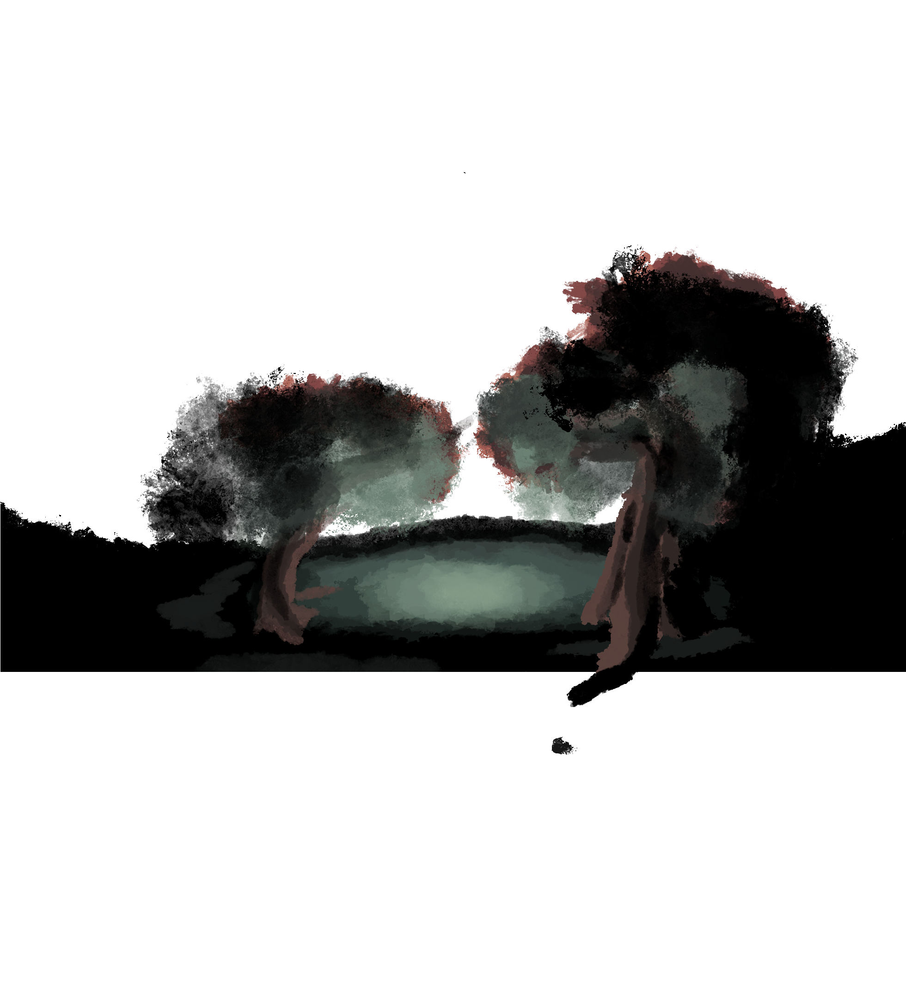
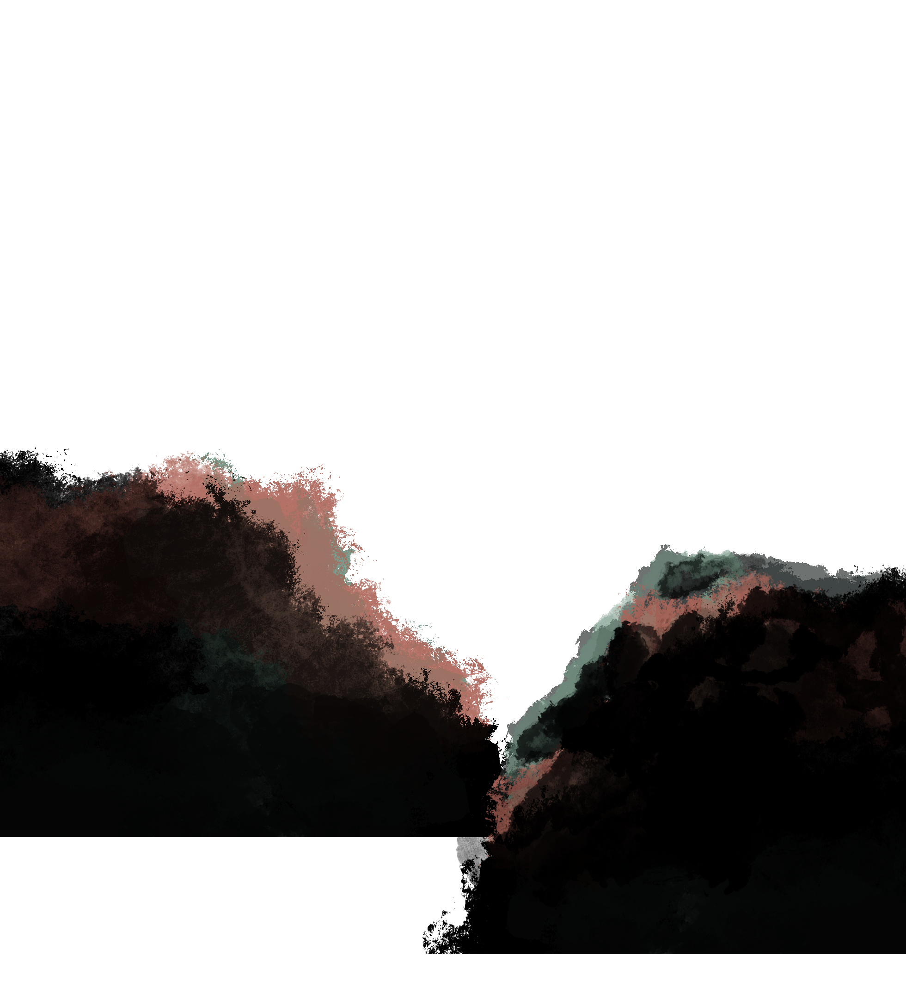
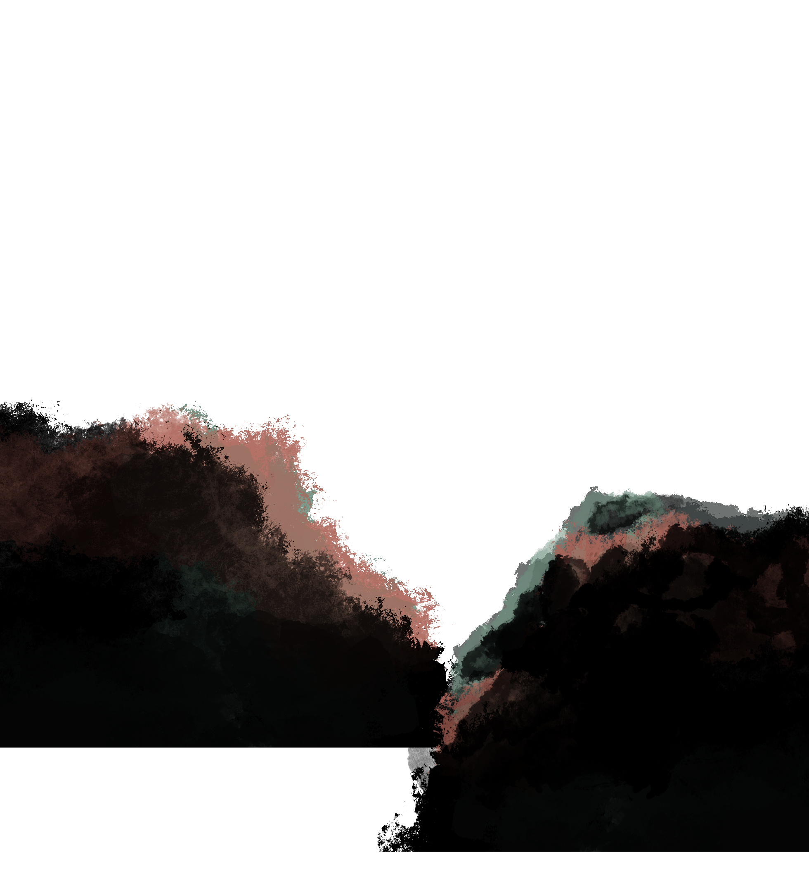
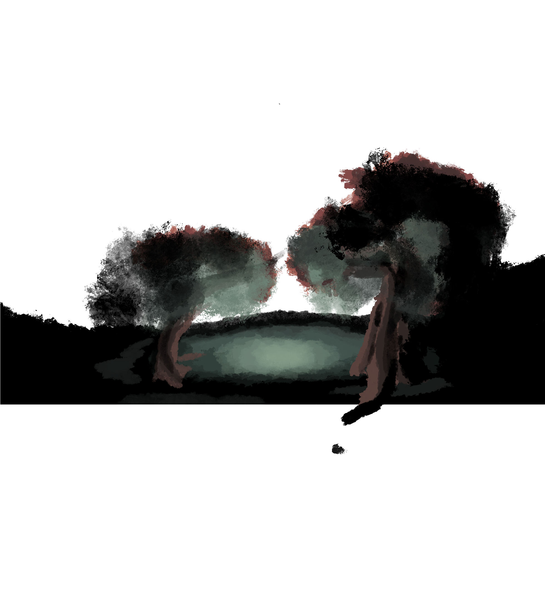
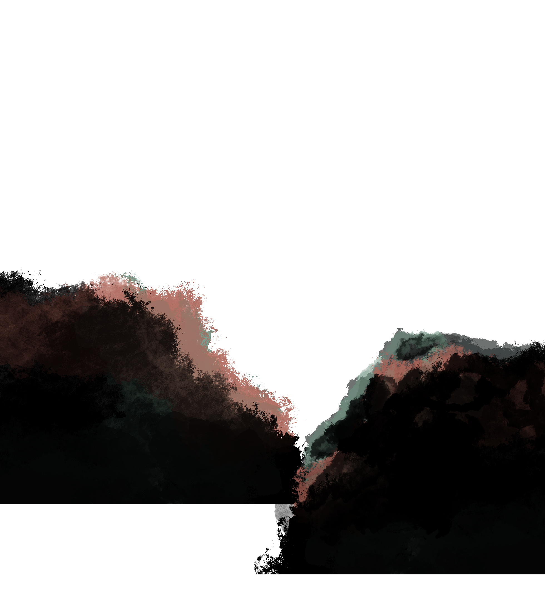

 





The combination of technology and creativity is an amazing gift that was given to me.
I have enjoyed using it in cybersecurity, app development, and collaberative projects.
I have been involved in several cyber security competitions and have even created my own capture the flag events for my friends. I love to work within this world of problem solving and have often sought to challenge myself to become a better version of myself 1% at a time. I currently don't work but do have obligations to the USAF/USSF as I am going throuhg the ROTC program at my school. I hope to be able to make the world better by using the skills I teach myself.
When I'm not working on school projects, I am often working on writing stories, drawing concepts, or trying to bring the imagined worlds I see into a medium everyone can see. I'm a story teller and stongly believe that any story even one without a message can boost human spirit and make us connect on a deeper level. I try and tie them to the technical expertise that I have. For example, this website I'm programming is itself an ARG. I love to work with others on projects and